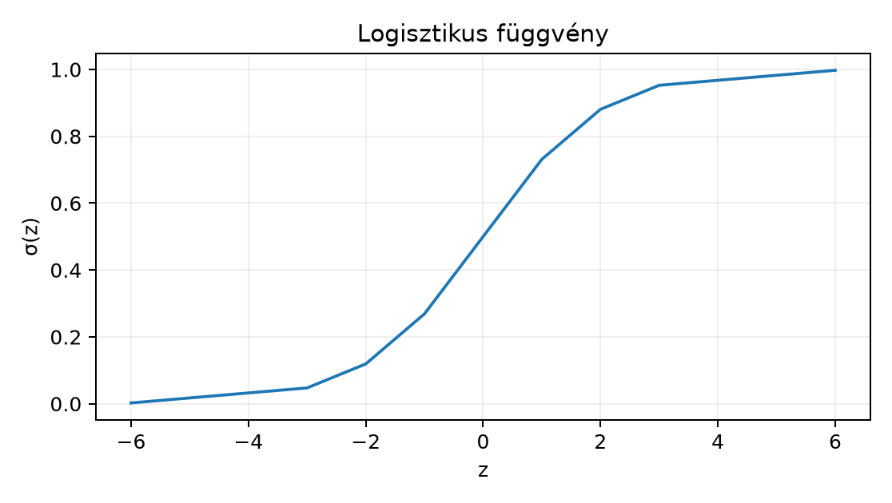

A Northstar prediktív projekt kérdése: egy rendelés pillanatában meg
tudjuk-e becsülni, hogy a kézbesítés a 7 napos ígéretnél később érkezik?
A megfigyelési egység egy rendelés; a célváltozó
target_late, amely 1, ha
delivery_days > promised_days, egyébként 0.
Bemenet a rendeléskor ténylegesen ismert feature-halmaz:
distance_km, priority_flag,
basket_minor, quantity_sum,
account_age_days, segment,
region, acquisition_channel. A prediktorok
közé tilos bevenni a delivery_days,
actual_delivery_at, label_available_at
oszlopokat, mert azok a predikció pillanatában még nem ismertek.
Ebben az alfejezetben egyetlen, jól naplózott kísérletet építünk: egy
üres referenciamodellt (DummyClassifier) és egy logisztikus
lineáris baseline-t futtatunk ugyanazon a train/test spliten. Az
eredmény egy artifact: a modell, a tesztpredikciók és egy manifest,
amely a feltételeket és a mérőszámokat rögzíti.
Mielőtt a kódot megnézné, tegyen előzetes becslést: mit vár a dummy modell ROC AUC-jától, és mit vár a logisztikus baseline-tól ugyanezen a metrikán? A válasz a fogalmi rész után ellenőrizhető.
A dummy osztályozó (dummy classifier) olyan modell,
amely nem használja a magyarázó változókat, csak a célváltozó tanítóbeli
eloszlásából készít predikciót. A scikit-learn
DummyClassifier osztályának több stratégiája van:
strategy="prior": minden sorhoz a tanítóbeli pozitív
arányt adja valószínűségként;strategy="most_frequent": mindig a leggyakoribb
osztályt jósolja;strategy="stratified": véletlenül címkéz a tanító
osztályarányokkal;strategy="uniform": egyenletesen véletlen;strategy="constant": egy előre megadott konstans
osztályt ad.A regressziós párja a DummyRegressor, amely tipikusan a
tanító átlagát, mediánját vagy egy kvantilist jósolja. A mi célunk
bináris osztályozás, ezért a prior stratégia a helyes
probabilisztikus baseline: minden tesztbeli sorra
ugyanazt a
valószínűséget adja, ahol
a tanítóbeli cél, a tanítósorok száma. A értéke a intervallumba esik, mértékegysége nincs.
A dummy modell értelme: ez az a teljesítmény, amit feature-ek nélkül, pusztán a késési arány ismeretében el lehet érni. Ha egy bonyolult modell nem tudja felülmúlni, akkor nincs bizonyíték arra, hogy a feature-ök hasznos jelet hordoznak.
A logisztikus regresszió a statisztikai modellekből ismert logit kapcsolatot használja. Legyen annak a valószínűsége, hogy a -edik rendelés késik. A modell lineáris prediktora
ahol a -edik feature, a hozzá tartozó paraméter. A lineáris prediktor valós szám, tehát önmagában nem valószínűség. A logisztikus függvény (logistic function, szigmoid) viszi át a intervallumba:
A függvény alakja:

A függvény inverze a logit: . A modell tehát azt mondja, hogy a késés log-odds-a lineáris a feature-ökben. Ez ugyanaz a gondolat, mint a Diagnosztika és robusztus standard error alfejezetben tárgyalt OLS lineáris prediktor, de itt a cél nem folytonos, hanem bináris, és a linkfüggvény biztosítja a megengedett tartományt.
A paramétereket a bináris keresztentrópia (binary cross-entropy), más néven logisztikus veszteség minimalizálásával becsüljük:
ahol a tényleges osztály, a predikált pozitív valószínűség, a sorok száma. A és vektor alakja is ; a veszteség mértékegysége a természetes logaritmus miatt „nat”, de a gyakorlatban egység nélküli mutatóként kezeljük. A formula a negatív log-likelihood átlaga: ha , akkor a tag marad, ha , akkor a tag.
Kézi kontroll. Legyen három megfigyelés: és . A veszteség:
Figyelje meg: a magabiztos tévedést a logaritmus erősen bünteti. Ha például , de , akkor , míg ha , csak .
A random_state egy pszeudovéletlen generátor seedje. Nem
teszi a modellt jobbá, és nem bizonyítja az általánosítást; csak
reprodukálhatóvá teszi az olyan lépéseket, amelyek véletlent használnak,
például a DummyClassifier(strategy="stratified")-et vagy
egyes szolverek belső inicializálását. A numerikus reprodukálhatóság nem
azonos a környezeti reprodukálhatósággal: ugyanaz a seed nem garantál
bitazonos eredményt más platformon, BLAS- vagy pandas-verzión. A
scriptben ezért a seedet a manifestben rögzítjük, de az eredményt a
tényleges környezetben mért szám jelenti.
A logisztikus regresszió szolverje iteratív optimalizálást végez,
hasonlóan a Határérték mint közelítési folyamat
alfejezetben tárgyalt közelítési folyamatokhoz. A max_iter
azt szabályozza, hány iterációt engedünk; ha a modell nem konvergál,
figyelmeztetést kapunk. Az alábbi kódban max_iter=1000, és
a futás után ellenőrizhető a n_iter_ értéke.
A scoring a modellválasztás célfüggvénye: az a mérőszám, amely alapján két modellt összehasonlítunk. A késési cél ritka lehet, ezért a puszta accuracy félrevezető: ha a késési arány 10%, egy „mindig nem késik” modell 90%-os accuracy-t ér el, de semmilyen döntési értéke nincs. Ezért két metrikát használunk:
A scoring megválasztása tudományos döntés: az AUC küszöbfüggetlen, de nem mondja meg, hogy a predikált valószínűség kalibrált-e. A log loss ezt is bünteti, viszont egyetlen rossz, nagyon magabiztos predikció nagy hibát okoz. A kísérletben mindkettőt jelentjük, de a modellválasztás elsődleges mutatója az AUC.
Az artifact a futtatás eredményterméke, nem csak a modellfájl. Az alábbi kísérlet három fájlt hoz létre:
model.joblib: a teljes pipeline, amely a preprocessort
és a becsült modellt együtt tartalmazza;test_predictions.csv: a tesztbeli rendelések
azonosítója, a tényleges cél és a predikált valószínűség;manifest.json: a seed, cutoff, verziók, sorszámok,
mérőszámok és a modellfájl ellenőrző hash-e.A manifest azért fontos, mert a modellfájl önmagában nem mondja el, milyen spliten és milyen környezetben született a szám. A saját, megbízható forrásból származó joblib fájlt betölthetjük; ismeretlen fájlt nem.
A következő script a lab/ munkakönyvtárból futtatható,
ahol az orders.csv és customers.csv
megtalálható. Először a splitet reprodukáljuk a Preprocessing tanulás kizárólag a training részen
alfejezetben tanult időbeli szerződés szerint: tanítóba azok a
rendelések kerülnek, amelyek order_ts < cutoff és
label_available_at < cutoff; tesztbe azok, ahol
order_ts >= cutoff. A köztes, kihagyott határsávot
kihagyjuk.
# baseline_experiment.py — futtatandó a lab/ munkakönyvtárból
import json
import hashlib
from datetime import datetime, timezone
from pathlib import Path
import joblib
import pandas as pd
import sklearn
from sklearn.compose import ColumnTransformer
from sklearn.dummy import DummyClassifier
from sklearn.impute import SimpleImputer
from sklearn.linear_model import LogisticRegression
from sklearn.metrics import log_loss, roc_auc_score
from sklearn.pipeline import Pipeline
from sklearn.preprocessing import OneHotEncoder, StandardScaler
EXPERIMENT_SEED = 20261021
CUTOFF = pd.Timestamp("2025-05-01T00:00:00+00:00")
TARGET = "target_late"
orders = pd.read_csv(
"orders.csv",
parse_dates=["order_ts", "label_available_at"],
)
customers = pd.read_csv("customers.csv", parse_dates=["signup_date"])
df = orders.merge(
customers[
["customer_id", "signup_date", "segment", "region", "acquisition_channel"]
],
on="customer_id",
how="left",
)
df["account_age_days"] = (df["order_ts"] - df["signup_date"]).dt.days
feature_cols = [
"distance_km", "priority_flag", "basket_minor", "quantity_sum",
"account_age_days", "segment", "region", "acquisition_channel",
]
numeric_cols = ["distance_km", "basket_minor", "quantity_sum", "account_age_days"]
categorical_cols = ["priority_flag", "segment", "region", "acquisition_channel"]
train_mask = (df["order_ts"] < CUTOFF) & (df["label_available_at"] < CUTOFF)
test_mask = df["order_ts"] >= CUTOFF
X_train = df.loc[train_mask, feature_cols]
y_train = df.loc[train_mask, TARGET]
X_test = df.loc[test_mask, feature_cols]
y_test = df.loc[test_mask, TARGET]
test_ids = df.loc[test_mask, "order_id"].to_frame()
if y_test.nunique() < 2:
raise ValueError("A teszt céloszlop csak egy osztályt tartalmaz; ROC AUC nem értelmezhető.")
preprocessor = ColumnTransformer(
[
("numeric", Pipeline([
("impute", SimpleImputer(strategy="median")),
("scale", StandardScaler()),
]), numeric_cols),
("categorical", Pipeline([
("impute", SimpleImputer(strategy="most_frequent")),
("encode", OneHotEncoder(handle_unknown="ignore")),
]), categorical_cols),
]
)
dummy = DummyClassifier(strategy="prior")
dummy.fit(X_train, y_train)
dummy_prob = dummy.predict_proba(X_test)[:, 1]
clf = Pipeline([
("prep", preprocessor),
("model", LogisticRegression(max_iter=1000, random_state=EXPERIMENT_SEED)),
])
clf.fit(X_train, y_train)
clf_prob = clf.predict_proba(X_test)[:, 1]
def evaluate(name, prob):
auc = roc_auc_score(y_test, prob)
ll = log_loss(y_test, prob)
print(f"{name:>10}: ROC AUC={auc:.4f}, log loss={ll:.4f}")
return {"roc_auc": round(auc, 4), "log_loss": round(ll, 4)}
print(f"train positive rate: {y_train.mean():.4f}")
print("iterations:", clf.named_steps["model"].n_iter_)
results = {}
results["dummy_prior"] = evaluate("dummy", dummy_prob)
results["logistic"] = evaluate("logistic", clf_prob)
artifact_dir = Path("artifacts") / "s083_baseline"
artifact_dir.mkdir(parents=True, exist_ok=True)
model_path = artifact_dir / "model.joblib"
joblib.dump(clf, model_path)
test_predictions = test_ids.copy()
test_predictions[TARGET] = y_test
test_predictions["prob_late"] = clf_prob
test_predictions.to_csv(artifact_dir / "test_predictions.csv", index=False)
manifest = {
"created_at_utc": datetime.now(timezone.utc).isoformat(),
"experiment_seed": EXPERIMENT_SEED,
"cutoff": CUTOFF.isoformat(),
"sklearn_version": sklearn.__version__,
"pandas_version": pd.__version__,
"n_train": int(train_mask.sum()),
"n_test": int(test_mask.sum()),
"n_purged": int((~train_mask & ~test_mask).sum()),
"features": feature_cols,
"model_file": model_path.name,
"model_sha256": hashlib.sha256(model_path.read_bytes()).hexdigest(),
"results": results,
}
(artifact_dir / "manifest.json").write_text(
json.dumps(manifest, indent=2), encoding="utf-8"
)
print(json.dumps(manifest, indent=2))A kimenet szemléltető formája — ezt a szöveget író modell nem futtatta, tehát a tényleges számok az Ön helyi futtatásából származnak:
train positive rate: 0.1847
iterations: [17]
dummy: ROC AUC=0.5000, log loss=0.4782
logistic: ROC AUC=0.6513, log loss=0.4590
{
"experiment_seed": 20261021,
"cutoff": "2025-05-01T00:00:00+00:00",
...
"results": {
"dummy_prior": {"roc_auc": 0.5, "log_loss": 0.4782},
"logistic": {"roc_auc": 0.6513, "log_loss": 0.459}
}
}A futás után az alábbi invariánsokat ellenőrizheti:
Ha a tesztarány eltér a train-priortól, a dummy nem az optimális konstans predikció a teszten; ez is mutatja, miért nem szabad a tesztarányt használni a baseline-hoz.
predict_proba kimenetének alakja
(n_test, 2), az első oszlop a negatív osztály
valószínűsége, a második a pozitív osztályé. A clf.classes_
sorrendje [0, 1]. A hibakeresésnél ez a leggyakoribb
bukó.test_predictions.csv sorainak száma meg kell egyezzen
a manifest n_test értékével. A model.joblib
hash-e a manifestben rögzített nyugta; ha újra futtatjuk, a hash
változhat, mert a pickle tartalmazhat környezetfüggő metaadatot is.n_iter_ értéke kisebb kell legyen
max_iter-nél; ha a szolver elérte a 1000 iterációt,
konvergencia-figyelmeztetést kapunk, és növelni kell a maximumot vagy át
kell gondolni a skálázást.Ha a logisztikus AUC 0.5 alatt vagy nagyon közel 0.5-höz van, az még nem bizonyítja, hogy a feladat megoldhatatlan; előbb a 3. feladat hibalehetőségeit kell kizárni.
A DummyClassifier csak referencia; a végső
tesztpontszámot nem szabad ismételt modellválasztásra használni. A
pozitív osztály és a predict_proba oszlopsorrendje
classes_ alapján ellenőrzendő.
1. Kézi log loss és dummy várható veszteség. Adott és . Számolja ki a bináris log loss-t három tizedesjegyre. Ezután legyen a train-prior és a tesztbeli pozitív arány . Számolja ki a dummy prior várható log loss-át, és hasonlítsa össze a tesztarányhoz tartozó entrópiával. Miért nagyobb a dummy várható vesztesége az entrópiánál?
2. Implementálás: futtatás és manifest-ellenőrzés.
Másolja a fenti scriptet baseline_experiment.py néven a
lab/ munkakönyvtárba, és futtassa
python baseline_experiment.py paranccsal. Ellenőrizze: a
dummy AUC értéke 0.5000 tolerancián belül, a
test_predictions.csv sorainak száma egyenlő a manifest
n_test értékével, és a model_sha256 megegyezik
a futtatás után a fájlra újraszámolt hash-sel. Jegyezze fel a tényleges
számokat a munkanaplójába.
3. Hibakeresés: felcserélt valószínűségi oszlop. Egy kolléga a fenti scriptben ezt a sort használta:
clf_prob = clf.predict_proba(X_test)[:, 0]A kapott logisztikus AUC 0.41 lett, a dummy AUC 0.50 maradt. Mi a
hiba? Adjon olyan ellenőrzést, amely a clf.classes_ alapján
kideríti, hogy melyik oszlop a pozitív osztály valószínűsége, és írja le
a javítást.
4. Megváltozott feltétel: most_frequent
stratégia. Cserélje ki a dummy stratégiát
DummyClassifier(strategy="most_frequent")-re, futtassa
újra, és értelmezze a log loss értékét. Miért nem alkalmas a
most_frequent stratégia a valószínűségi pontszámot igénylő
AUC/log loss összehasonlításra? Mi lenne a helyes baseline-választás, ha
a döntési cél accuracy lenne?
1. megoldás. Az első három tag:
Az átlaguk . A dummy prior várható vesztesége:
A tesztarányhoz tartozó entrópia:
A dummy veszteség nagyobb, mert a train-prior 0.2, miközben a tesztarány 0.3; a dummy nem használhatja a tesztarányt, ezért a tesztarány eltolódása többletveszteséget okoz. Tolerancia: a kerekítések miatt.
2. megoldás. A konkrét AUC és log loss értékek a
futtató géptől és a csomagverzióktól függnek, ezért a megoldás az
ellenőrző invariantokban van. A dummy AUC-nak
-nak
kell lennie; ha nem, a split vagy a predict_proba
oszlopválasztás hibás. A test_predictions.csv sorainak
száma pontosan a manifest n_test értéke. A hash ellenőrzése
Pythonból:
import hashlib
print(hashlib.sha256(Path("artifacts/s083_baseline/model.joblib").read_bytes()).hexdigest())Ha a logisztikus AUC nem haladja meg a dummy 0.5-öt, előbb nézze meg a 3. feladat diagnózisát, és ellenőrizze, hogy a preprocessing tényleg csak a tanítórészen lett illesztve.
3. megoldás. A predict_proba két
oszlopot ad: az első a classes_[0] osztály valószínűsége, a
második a classes_[1] osztályé. Mivel a cél osztályai
[0,1], a [:,0] a „nem késik” valószínűségét
jelenti. Ha ezt adjuk pozitív pontszámként a ROC-hoz, a jó modell
sorrendjét megfordítjuk; a kapott AUC körülbelül
,
ezért lett 0.41 egy körülbelül 0.59-es modellnél. A javítás:
pos_class = clf.classes_[1]
clf_prob = clf.predict_proba(X_test)[:, 1]
assert pos_class == 1Az assert a szándékot is rögzíti: ha a célkódolás
megváltozna, a hiba azonnal kiderül.
4. megoldás. A most_frequent stratégia
a tanító leggyakoribb osztályát adja 1 valószínűséggel, a másikat 0
valószínűséggel. Ha a pozitív osztály a ritkább, akkor minden pozitív
valószínűség 0; a log_loss a 0 valószínűséget csak
numerikus klipeléssel tudja kezelni, ezért óriási értéket kapunk, az AUC
pedig nem hordoz valódi pontszám-információt. Ez a stratégia
accuracy-alapú döntéshez való: ha a cél a találati arány maximalizálása,
a most_frequent a helyes baseline. A mi scoringunk AUC és
log loss, ezért a prior stratégia a megfelelő.
A jó tanítómetrika nem bizonyítja az általánosítást.
Tegyük fel, hogy a késési arány 10% körüli. A
DummyClassifier(strategy="most_frequent") mindig „nem
késik”-et mond, ezért a tanító accuracy 0.90 lehet — miközben az AUC
0.5, tehát semmilyen szétválasztó ereje nincs. Ugyanez a csapda a
bonyolult modellekkel: a logisztikus vagy faalapú modell tanító AUC-ja
akár 0.95 is lehet, de ha a teszt AUC csak 0.53, a modell a tanító zaját
tanulta meg, nem a jövőbeli rendeléseken érvényes jelet. Az egyetlen
train/test spliten mért tesztmetrika sem feltétlenül végleges becslés:
ha a küszöböt vagy a feature-választást a teszten finomítjuk, a teszt is
„elszennyeződik”. Az érintetlen teszt és a külön validációs réteg elvét
a Tanítás, validáció és érintetlen teszt vezette
be.
Egy másik gyakori félreértés: a random_state növelése
nem hitelesíti a modellt. Ha öt különböző seeddel futunk, és a legjobb
teszt-AUC-t jelentjük, az maga is szelekciós torzítás: a tesztet
használtuk modellválasztásra. A seed arra való, hogy egyetlen futás
megismételhető legyen, nem arra, hogy a szerencsés futást keressük.
A DummyClassifier(strategy="prior") a tanítóbeli késési
arányt adja minden sorhoz, és 0.5-ös ROC AUC-t kell adnia; ez az a
szint, amelyet minden modellnek meg kell haladnia. A logisztikus
baseline lineáris prediktort visz át a logisztikus függvénnyel
valószínűséggé, és a bináris keresztentrópiát minimalizálja. A kísérlet
akkor korrekt, ha a split a predikció pillanatához igazodik, a
preprocessing csak a tanítórészen illeszkedik, és a scoring az AUC-t meg
a log loss-t is naplózza. A manifest a futás feltételeit, verzióit és
hash-ét rögzíti. A következő alkalmazás, a Predikciós szerződés és hibateszt, ezt a baseline-t
predikciós szerződéssé alakítja: bemeneti séma, kimeneti alak és
hibateszt.